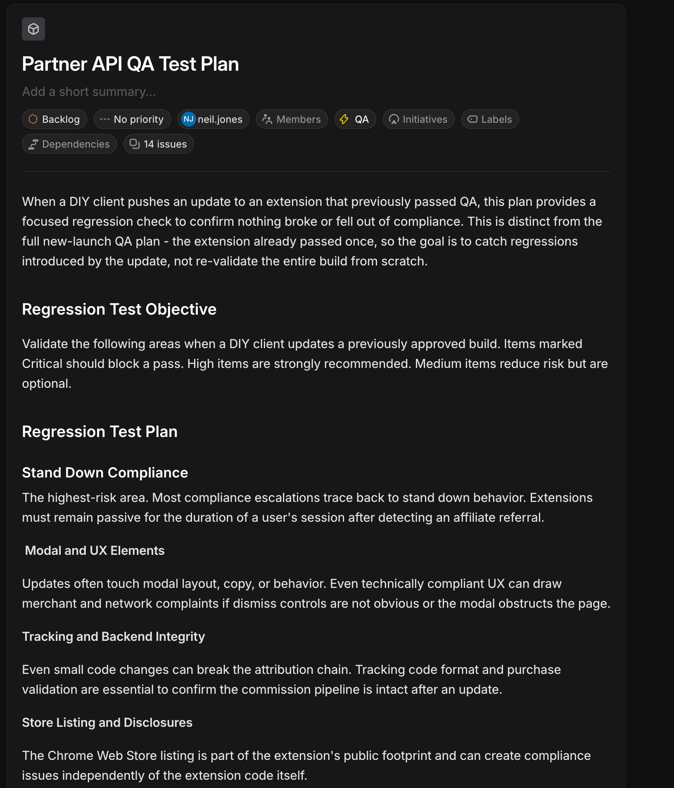
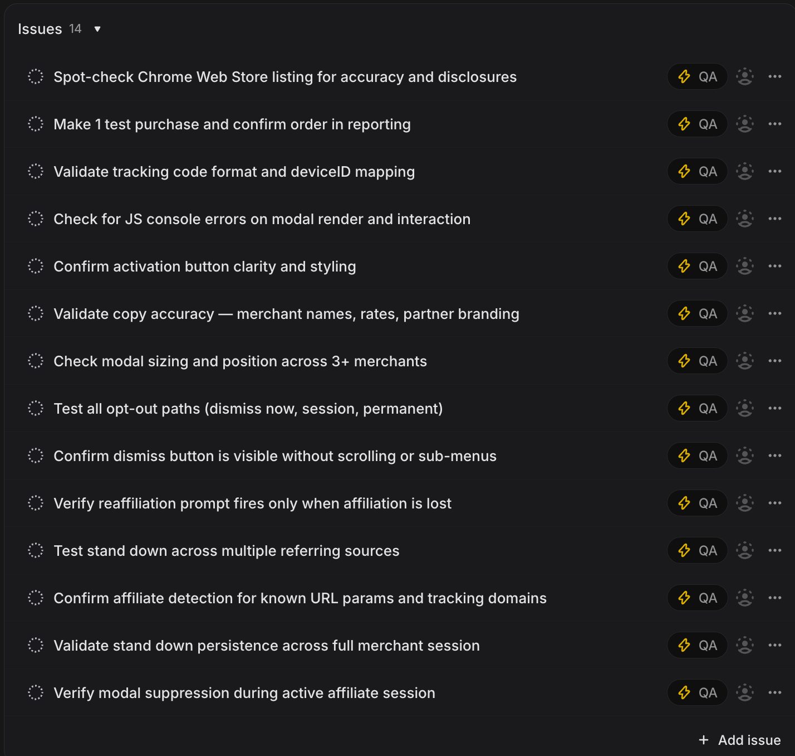
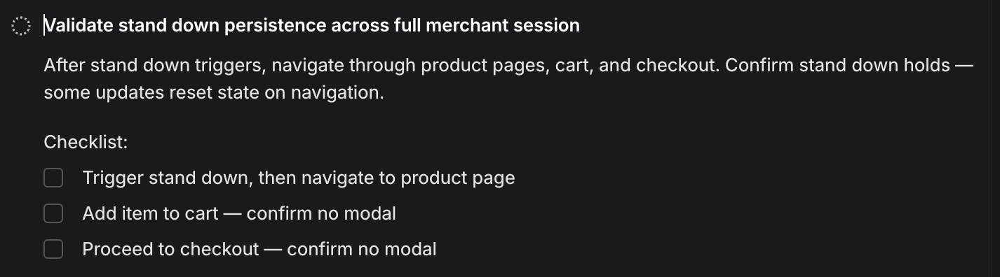
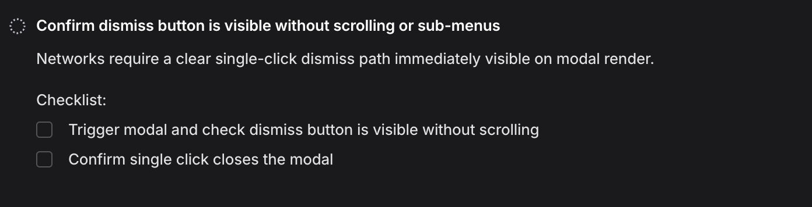
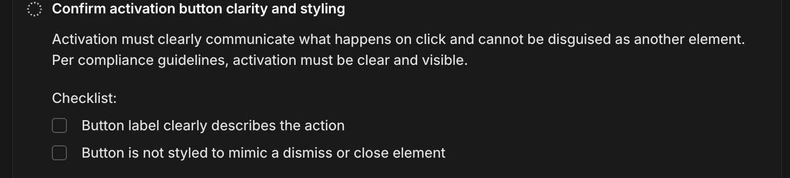
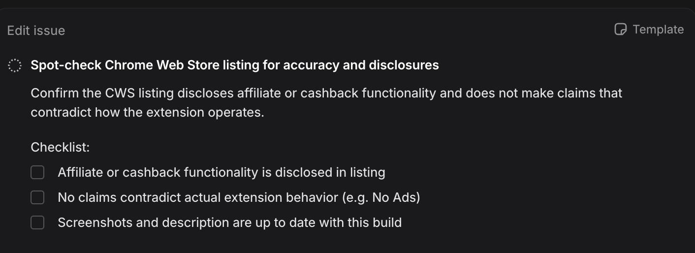

Case study
Partner API QA test plan
A focused regression strategy for when a DIY client ships an update to a browser extension that already passed full QA. The goal is to catch new regressions—not to re-validate the entire build from scratch.

How this plan works
After a full QA cycle, most risk from a client-side update clusters in a handful of behaviors: passive “stand down” after a referral, modal UX, attribution tracking, and the public Chrome Web Store listing. This plan routes testers through those themes first, with explicit severity so the team knows what must block a pass versus what is recommended or optional.
- Critical Block — should block a pass if failed.
- High Strong — strongly recommended before sign-off.
- Medium Opt — optional but reduces residual risk.
Four focus areas
1 · Stand down compliance
Highest-risk bucket: once affiliate referral is detected, the extension must stay passive for the rest of the session. Most compliance escalations trace back to stand down behavior.
2 · Modal and UX
Layout, copy, and interaction changes: dismiss controls must be obvious, and modals must not obstruct the page in ways that trigger merchant or network complaints even when technically “compliant.”
3 · Tracking and backend integrity
Protect the attribution chain: tracking code formats, device mapping, and purchase validation so the commission pipeline is not broken by refactors.
4 · Store listing and disclosures
Chrome Web Store copy, screenshots, and claims—the public footprint can create compliance exposure independent of runtime extension code.
Issue coverage (14 checks)
Each item is tracked as its own issue in Linear under the QA label. Together they map the four pillars above into executable checks.

- Spot-check Chrome Web Store listing for accuracy and disclosures
- Make 1 test purchase and confirm order in reporting
- Validate tracking code format and deviceID mapping
- Check for JS console errors on modal render and interaction
- Confirm activation button clarity and styling
- Validate copy accuracy — merchant names, rates, partner branding
- Check modal sizing and position across 3+ merchants
- Test all opt-out paths (dismiss now, session, permanent)
- Confirm dismiss button is visible without scrolling or sub-menus
- Verify reaffiliation prompt fires only when affiliation is lost
- Test stand down across multiple referring sources
- Confirm affiliate detection for known URL params and tracking domains
- Validate stand down persistence across full merchant session
- Verify modal suppression during active affiliate session
What a written issue looks like
Issues pair a short compliance rationale with a checkbox checklist so execution is consistent across testers and runs.
Stand down through checkout
Validates that stand down survives real navigation—not only the first page load.

Dismiss path visibility
Networks expect a clear, single-click dismiss without hunting.

Activation clarity
Activation cannot be ambiguous or disguised as dismiss.

Chrome Web Store disclosures
Public listing must match how the extension actually behaves.
